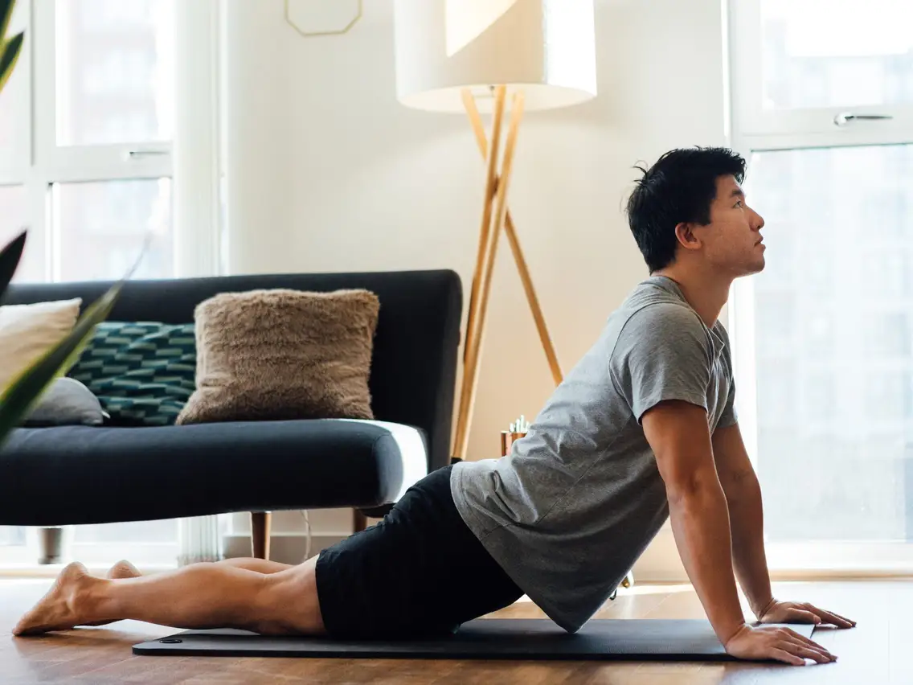

Flexibility Exercises
Flexibility exercises are essential for improving the range of motion, reducing muscle stiffness, and preventing injuries. Below are some common flexibility exercises, the calories you can burn, and how to perform them.
Exercises and Calories Burned
How to Perform Each Exercise
Static Stretching

Instructions:
- Hold each stretch for 15-60 seconds, without bouncing.
- Focus on stretching major muscle groups (e.g., hamstrings, quadriceps, calves, shoulders).
- Stretch to the point of mild discomfort, not pain.
- Breathe deeply and relax into the stretch.
- Repeat each stretch 2-4 times.
Tips:
- Perform static stretching after a workout when your muscles are warm.
- Avoid holding your breath while stretching.
Back to top
Dynamic Stretching
Instructions:
- Perform controlled leg and arm swings that gently take you to the limits of your range of motion.
- Focus on movements that mimic the activity you are about to do (e.g., lunges, arm circles).
- Start with slow, controlled movements and gradually increase speed and intensity.
- Perform each movement for 30-60 seconds.
Tips:
- Incorporate dynamic stretching into your warm-up routine.
- Maintain control of your movements to avoid injury.
Back to top
Back to main page